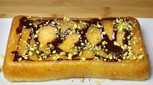

Gulab Jamun Cake

Gulab Jamun is one of the most well-liked and popular desserts in India. Gulab Jamun has a special place in my heart as it was my very first video showcased on my YouTube channel. I never thought I would be able to parlay my passion into doing something like "Manjula's Kitchen".
Gulab Jamun also happens to be a family favorite so it is always a go-to dessert I prepare. My daughter-in-law, who also loves Gulab Jamun, wanted me to try out a variation of the traditional recipe.
She saw a recipe online for a Gulab Jamun cake and asked me to try making my version of this recipe. She suggested that I bake the Gulab Jamun instead of frying them, but to also try and preserve the original taste.
Ingredients
- 2 cup milk powder
- ½ cup all-purpose flour – plain flour or maida
- ½ tsp baking soda
- ½ tsp baking powder
- ½ tsp cardamom powder
- 1 Tbsp sugar
- 8 Tbsp unsalted butter
- ¾ cup whole milk
syrup
- 1 ½ cup sugar
- 1 cup water
- ¼ tsp cardamom powder
- ¼ tsp saffron thread
- 1 tsp lemon juice
For serving
- 1 Tbsp pistachio (sliced)
- ¼ cup chocolate gnash
Also need
Method
- To make Gulab Jamun Cake first mix all the dry ingredients together in a bowl. Milk powder, all-purpose flour, baking soda, baking powder, sugar and cardamom powder. Mix it well
- In another bowl take butter, butter should be at room temperature not melted, whip the butter until it is fluffy. About 1 minute.
- Now add the dry ingredients with butter and mix it well.
- Slowly add the milk, milk should be at room temperature, mix it for about 2 minutes, batter consistency should be like cake mx.
- Grease the loaf pan. Pour the Gulab Jamun batter in the pan.
- Pre heated the oven at 300-degree Fahrenheit. Bake the cake for about 25-30 minutes,
- Cake should be light brown the Gulab Jamun color, from the top and when you insert the knife in the center of cake should pulls out clean.
- Keep the cake aside and now make the syrup add all the ingredients for syrup, sugar, water, lemon juice, cardamom, and saffron, in a saucepan. Bring it to a boil over medium-high heat. After syrup comes to boil lower the heat to medium and let it simmer for 2 about minutes.
- Remove the pot from the heat.
- Before poring the syrup over the cake, Poke holes in the cake with a fork, several places. Pour the syrup over the cake while it is still warm in the pan. Save about 1/2 cup of syrup. It will look like a lot of syrup, but the cake will soak it all up. Let the cake rest for 10 minutes, then invert it onto a plate.
- You can garnish the Gulab Jamun Cake in a variety of different ways. I am garnishing with chocolate ganache I have done the chocolate Ganache recipe see the recipe for chocolate cake and sliced pistachios. This recipe has wonderful flavor and appeals to all ages.